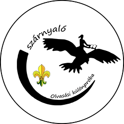

Cserkészeknek
Magyarságismereti tananyagok és különpróbák:
Olvasási különpróba

okp.kmcssz.org
ŐV magyarságismereti anyag
ST magyarságismereti anyag
Időszalag
Órarend
A magyarságismereti órák menete (hétfő esténként, Zoomon):
| Dátum | ŐV | ST |
|---|---|---|
| Szeptember 14. | Ismétlő próbavizsgák (Csaba és Kati) | Próbavizsga (Csaba és Kati) |
| Szeptember 21. | Történelem (Csaba) Szabadságharc; Kezdeti győzelmek után vereségek következnek | Irodalom (Szilvia) Radnóti: Nem tudhatom |
| Szeptember 28. | Irodalom (Edina) Petőfi: Falu végén kurta kocsma | Történelem (Andi) Az I. világháború |
| Október 5. | Nyelvtan (Kata) Petőfi: Falu végén kurta kocsma | Nyelv (Böbe) Magyarország államszervezete 1.; helyesírás 12–13 |
| Október 12. | Történelem (Csaba) 1848 és Kiegyezés és az Osztrák-Magyar Monarchia megszületése | Néprajz (Petra) Népi kismesterségek, Állattartás, Földművelés |
| Október 19. | Nyelvtan (Kata) József Attila: Betlehemi királyok | |
| Október 26. | Irodalom (Edina) József Attila: Betlehemi királyok | Történelem (Andi) A két világháború között |
| November 2. | Történelem (Csaba) Ismétlés, Első világháború előtt | Irodalom (Szilvia) Ady: A Sion-hegy alatt |
| November 9. | Földrajz (Kristóf) Dunántúl, Budapest | Földrajz (Böbe) Belső, vagy történelmi Erdély |
| November 16. | Történelem (Csaba) Az I. világháború | Irodalom (Szilvia) Babits: Esti kérdés |
| November 23. | Irodalom (Edina) Ady Endre: Karácsony | Néprajz (Petra) Népi táplálkozás, Népi építkezés, Népi bútorok |
| November 30. | Történelem (Csaba) Magyarország feldarabolása | Nyelv (Böbe) Magyarország államszervezete 2.; helyesírás 14–15 |
| December 7. | Történelem (Csaba) Magyarország sikeres talpra állása | Történelem (Andi) II. világháború |
| December 14. | Nyelvtan (Kata) Ady Endre: Karácsony | Irodalom (Szilvia) Petőfi: A Tisza |
| December 21. | Történelem (Andi) Szovjet megszállás, a kommunizmus bevezetése | |
| Január 11. | Irodalom (Edina) Weöres Sándor: Száncsengő | Földrajz (Böbe) Vajdaság, Burgenland |
| Január 18. | Nyelvtan (Kata) Weöres Sándor: Száncsengő | Nyelv (Böbe) Kijelentő, kérdő és felszólító mondatok mf. 10–12. oldal; helyesírás 15 |
| Január 25. | Földrajz (Kristóf) Határon túli részek | Irodalom (Szilvia) Juhász: Milyen volt; Tóth: Láng |
| Február 1. | Történelem (Csaba) II. világháború | Néprajz (Petra) A magyar nép táncai, Népszokások |
| Február 8. | Irodalom (Edina) József Attila: Altató | Nyelv (Böbe) Szórend mf. 13–16, 15–16 |
| Február 22. | Nyelvtan (Kata) József Attila: Altató | Történelem (Andi) Az utóbbi évtizedek és ismétlés |
| Március 1. | Történelem (Csaba) Szovjet megszállás, a kommunizmus bevezetése | Irodalom (Szilvia) Kányádi: Két nyárfa és Wass: Üzenet haza |
| Március 8. | Irodalom (Edina) Áprily: Március | Néprajz (Petra) A népmese, Népdal, népzene |
| Március 15. | Nyelvtan (Kata) Áprily: Március | Nyelv (Laci) Cserkészvizsga kötelező szövegei (cserkésztörvények, himnusz stb. leírása) |
| Március 22. | Történelem (Csaba) Az 1956-os forradalom és szabadságharc; A rendszerváltás évei, pillantás a jövőbe | Történelem (Andi) Ismétlés |
| Március 29. | Cserkész (Laci) A cserkészvizsga kötelező szövegei – próbavizsga | Irodalom (Szilvia) Balla: Tövisek közt |
| Április 5. | Földrajz (Kristóf) Földrajz próbavizsga | Néprajz (Petra) Néprajz próbavizsga |
| Április 12. | Irodalom (Edina) Irodalom próbavizsga | Nyelv (Böbe) Nyelvtan próbavizsga |
| Április 19. | Nyelvtan (Kata) Nyelvtan próbavizsga | Történelem (Andi) Történelem próbavizsga |
| Április 26. | Történelem (Csaba) Történelem ismétlés és próbavizsga | Irodalom (Szilvia) Irodalom próbavizsga |
| Május 3. | Földrajz (Böbe) Földrajz próbavizsga |